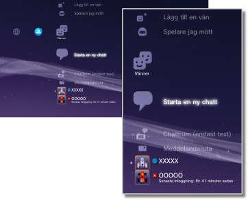

Vänner > Kategorin Vänner
Kategorin Vänner
För att använda denna funktion kanske du måste uppdatera systemprogramvaran.
Du kan skicka eller ta emot meddelanden eller chatta med andra PS3™-användare över nätverket PSNSM. För att kunna använda de här funktionerna måste du skapa (registrera dig för) ett Sony Entertainment Network-konto. Följande ikoner visas under  (Vänner). Ikonerna som visas varierar beroende på vilka villkor som används.
(Vänner). Ikonerna som visas varierar beroende på vilka villkor som används.

 |
Lista över blockerade | Visa en lista med personerna på din blockeringslista. |
|---|---|---|
 |
Lägg till en vän | Skicka en begäran om att lägga till en person till listan över vänner. |
 |
Spelare jag mött | Visar en lista över personer som du har spelat onlinespel i PlayStation®3-format* med. Välj den här ikonen om du vill skicka ett meddelande till en spelare eller en begäran om att lägga till en vän. |
 |
Starta en ny chatt | Starta en chatt. |
 |
Chattrum (endast text) | Denna ikon visas när det finns ett chattrum för textchatt. Om ett nytt chattrum läggs till, visas  . . |
 |
Röst-/videochattrum | Denna ikon visas under en röst-/videochatt. |
 |
Meddelanderuta | Skapa nya meddelanden och visa meddelanden som du har tagit emot och skickat. |
 |
(ditt online-ID) | Avataren som du väljer för ditt konto visas här. |
|
(Kompisens namn) | Den här ikonen visar en person från listan över vänner. Om du väljer den här ikonen kan du skicka och ta emot meddelanden eller chatta med vänner. |
| * |
Den här funktionen kan inte användas i alla spel. |
|---|
Tips!
- I PS3™-systemet kallas användare som finns med på listan över vänner för "Vänner". E-postmeddelanden som du skickar eller tar emot under (Vänner) kallas "Meddelanden".
- Du kan lägga till högst 2 000 vänner.
- Högst 100 vänner visas.
- Om du har fler än 100 vänner måste du logga ut och därefter logga in igen för att uppdatera de vänner som visas. När du gör detta ska du även logga ut från alla andra enheter som du är inloggad på med PSNSM.
- Det går även att hantera vänner från enheter som t.ex. PS4™-system, PS Vita-system och smartphone-telefoner eller andra enheter med PlayStation®-app installerad.
- Upp till 50 spelare kan visas under
 (Spelare jag mött). När gränsen är uppnådd kommer den äldsta noteringen att raderas automatiskt varje gång en ny spelare läggs till.
(Spelare jag mött). När gränsen är uppnådd kommer den äldsta noteringen att raderas automatiskt varje gång en ny spelare läggs till. - För att kunna röstchatta behöver du en ljudindata- och ljudutdataenhet (t.ex. ett headset, säljs separat). För att kunna videochatta behöver du dessutom en USB-kamera (säljs separat).
- Du kan använda ett kompatibelt USB-headset/Bluetooth® headset/USB-kamera (EyeToy™)/PlayStation®Eye/USB-kamera som följer USB video class (UVC) för PS3™-systemet.
- Använd en hubb som stödjer USB 2.0 när du ansluter en USB-kamera via en USB-hubb. Om du använder en hubb som inte stödjer USB 2.0 kan bilden försämras eller så visas den eventuellt inte.
- För information om tillbehör som stöds och användarinstruktioner ska du kontakta den återförsäljare som säljer tillbehören.